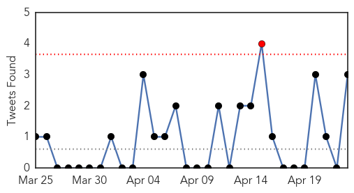
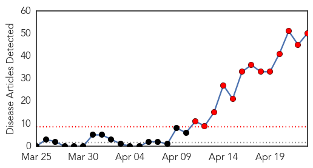
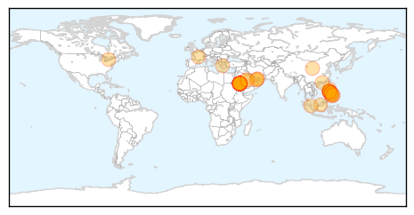

Unknown
30-Day Web Trend
0 alerts, 0 warnings

30-Day Twitter Trend
3 alerts, 0 warnings

Article Locations

Article Confidences

Top Articles:
- 0.998
- New Saudi MERS cases spark global health concern
- 0.991
- Spread of MERS in S. Arabia accelerates with 17 new cases
- 0.989
- MERS spread accelerates with 17 new cases
- 0.980
- No Thais in Saudi Arabia infected with MERS : Foreign Ministry
- 0.972
- Case of Legionnaires' disease confirmed in Hillsborough County
- 0.964
- No Thais in Saudi Arabia found infected with MERS
- 0.959
- Hand, foot and mouth disease reoccurs in Cambodia, killing 1
- 0.917
- Chicago Tribune
- 0.917
- Chicago Tribune
- 0.917
- Chicago Tribune
- 0.917
- Chicago Tribune
- 0.911
- CDC monitoring those who had contact with mainland H7N9 patient
- 0.877
- CDC monitoring 96 people over imported H7N9 case
- 0.866
- Australia transport safety chief says beach debris not from MH370 -ABC Radio
- 0.866
- Unity with Hamas does not contradict peace talks with Israel
- 0.866
- Russia says conducting military drill near Ukraine
- 0.866
- Russia offers gas talks with EU, Ukraine in Moscow on April 28
- 0.866
- Turkey's Erdogan offers "condolences" to grandchildren of Armenians killed by Ottomans
- 0.866
- Egyptian policeman, militant killed in security force operation
- 0.859
- Farsnews
- 0.847
- ER symptoms ‘consistent’ with MCHM exposure
- 0.828
- Taiwan confirms 3rd imported H7N9 case
- 0.823
- Drop in malaria cases, focus now on ‘defeating the disease’
- 0.814
- Children Suffering from IBS are at Higher Risk of Celiac Disease
- 0.792
- Autoimmune diseases are complex, far-reaching
- 0.789
- Florida university opens TB lab in Haiti
- 0.750
- HIV at 30: Virus' Co-Discoverer Says Cure Is Unlikely
- 0.737
- MERS: Fakieh assures transparencyHealthcare
- 0.686
- Russia, EU to hold consultation over Russia’s ban on pork imports
- 0.672
- SYLVANT™ (siltuximab) Receives FDA Approval to Treat Multicentric Castleman's Disease (MCD) -- HORSHAM, Pa., April 23, 2014 /PRNewswire/ --
- 0.648
- Hantavirus case reported in Garfield County
- 0.623
- Severe water shortage in Bentiu UN base
- 0.602
- Clark Airport sets up quarantine to avoid spread of MERSCOV
- 0.593
- Producers want more federal help to deal with highly contagious pig virus
- 0.590
- UN: Disease threatens world’s bananas
- 0.590
- Canadian hog producers want more federal help for pig virus
- 0.580
- Dr. Robert E. Danz Brings Laser Gum Surgery to Ghent, NY Patients Seeking Gum Disease Treatment
- 0.576
- Hog producers want more help to deal with contagious, deadly virus
- 0.575
- Oman Ministry of Health medical staff upbeat over salaries
- 0.553
- The Charleston Chronicle, Minority Populations in U.S. Hit Hard by High Blood Pressure, Kidney Disease, Diabetes
- 0.526
- Public Health - Muskegon County invites public to community meeting on infectious diseases
- 0.525
- 10 Hephzibah High students test positive for TB exposure
- 0.522
- Portland man contracted rat-bite fever from Petco rodent, lawsuit says
- 0.514
- The Berkshires online guide to events, news and Berkshire County community information.
- 0.508
- Jeddah needs 30 more health facilities
- 0.501
- Federal Report Shines Light On Health Impacts Of West Virginia Chemical Spill
Top Tweets:
- 0.826
- it was mentioned that lots of recent cases acquired the virus while in hspitl. or in contact with MERS pos. cases!
- 0.817
- The latest cases bring the total number of confirmed MERS cases in Saudi Arabia to 272, of whom 81 have died. Fatality rate=30%.
- 0.811
- Cartes se encuentra en el Comando en Jefe: En su carácter de Comandante en Jefe de las Fuerzas Armadas de la N... http://t.co/75RtjeIyOt
- 0.673
- Saudi MoH reports 13 new MERS cases which brings total today’s cases to 24 cases. The new cases incl. 2 deaths. http://t.co/QVWRxYZcVE
- 0.595
- Paraguay invierte solo el 1% en calidad educativa: La ministra de Educación, Marta Lafuente, señaló durante un... http://t.co/NXAbAX9Fxp
- 0.586
- We need viral sequence to follow spread of the virus. Hopefully that is underway. Very worrying if all genetically linked
- 0.551
- Awesome figure from on MERS outbreak https://t.co/g9rGELql0L
- 0.520
- RT: Sharp Rise In MERS Cases May Mean The Virus Is Evolving http://t.co/996F8qr1wI + FAQ on MERS from CDC http://t.co/umFxKzfb3I…
MERS
30-Day Web Trend
13 alerts, 0 warnings

30-Day Twitter Trend
1 alerts, 0 warnings

Article Locations
Article Confidences

Top Articles:
- 1.000
- Greece Reports First Case Of MERS CoV Infection
- 1.000
- 5 more Mers cases tested negative in UAE - Emirates 24
- 1.000
- WHO concerned by sharp rise in MERS cases
- 0.999
- Government fails to contact all 414 Etihad passengers for MERS-CoV testing
- 0.999
- Nine More Cases Of MERS Infection Reported In UAE
- 0.999
- Phuket airport health officials ramp up MERS surveillance
- 0.999
- MERS death toll hits 81 in Saudi Arabia
- 0.999
- WHO concerned by nearly 150 new MERS cases this month
- 0.999
- WHO office sounds alarm as MERS cases push higher
- 0.999
- No Cases of MERS-CoV Infection in Brunei, MoH Remains Vigilant
- 0.999
- Saudi Arabia sees 11 new MERS cases as virus sweeps to Mecca
- 0.998
- Middle East respiratory syndrome coronavirus (MERS-CoV) – update
- 0.998
- Teenager among 11 new MERS cases in Saudi
- 0.998
- MERS Watch: Saudi Numbers Up Again
- 0.998
- Saudi announces 11 new MERS infections
- 0.998
- Gush of MERS cases sparks speculation about causes
- 0.998
- MERS virus diagnosed in man in Greece
- 0.998
- MERS cases rise amid vaccine hope
- 0.998
- DH closely monitors nine additional overseas MERS cases reported to WHO
- 0.997
- Saudi Arabi Removes Health Minister As Country Continues To Battle Deadly Virus
- 0.997
- Middle East Online
- 0.997
- Saudi Arabia Reports 11 New Cases of MERS Virus
- 0.997
- Saudi announces 11 new MERS infections
- 0.997
- Filipinos in Middle East urged to get clearance before returning
- 0.996
- Saudi announces 11 new MERS infections
- 0.996
- Saudi Arabia reports 11 new cases of MERS virus, first in Mecca
- 0.996
- Saudi Arabia reports 11 new cases of MERS virus, first in Makkah
- 0.996
- Filipinos coming home from Mideast must obtain MERS clearance – DOH
- 0.996
- Gov't fails to contact all 414 Etihad passengers for MERS-CoV testing
- 0.995
- Nine Cases of MERS-CoV are Reported to WHO
- 0.993
- Saudi Health Ministry says MERS outbreak not "epidemic"
- 0.993
- 43 out of 414 Etihad passengers yet to be found, tested for MERS-CoV – Palace
- 0.991
- Five more individuals with MERS-CoV test negative for the virus, says Health Authority
- 0.985
- Saudi Arabia reports 11 new MERS coronavirus cases - Xinhua
- 0.982
- Stranded OFWs, old and sick, children, susceptible to MERS-CoVManila Channel
- 0.968
- Etihad passenger from GenSan tests negative of MERS-CoV
- 0.926
- Dubai Ambulance prevents Mers from spreading - Emirates 24
- 0.922
- Health clearance may be required from OFWs
- 0.906
- Kg Bintang folk to be monitored for two more weeks after deadly infection - Nation
- 0.906
- Contact-tracing of Etihad passengers down to 43
- 0.893
- Public urged to cooperate in corona virus examination
- 0.889
- Negros Oriental
- 0.862
- More than half of Etihad passengers test negative for MERS-CoV
- 0.856
- Gov’t still tracking 43 more possible MERS-CoV carriers
- 0.830
- Search for remaining travelers from UAE on
- 0.823
- Kuwait- Five individuals tested negative for Coronavirus
- 0.788
- 4 of 6 Negrenses tested negative for MERS-CoV
- 0.780
- MERS-CoV watch 5 who reject quarantine face arrest
- 0.770
- DOH: The Philippines is still MERS-CoV free
- 0.550
- Schools seek ministries' advice over coronavirusHealthcare
Showing top 50 articles...
Top Tweets:
-
No tweets found for Apr 23, 2014